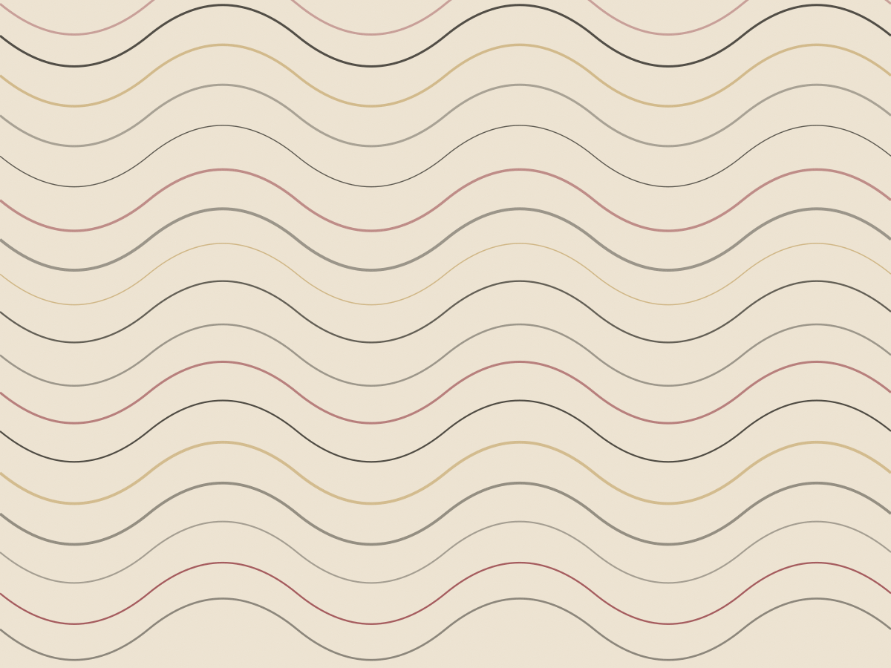
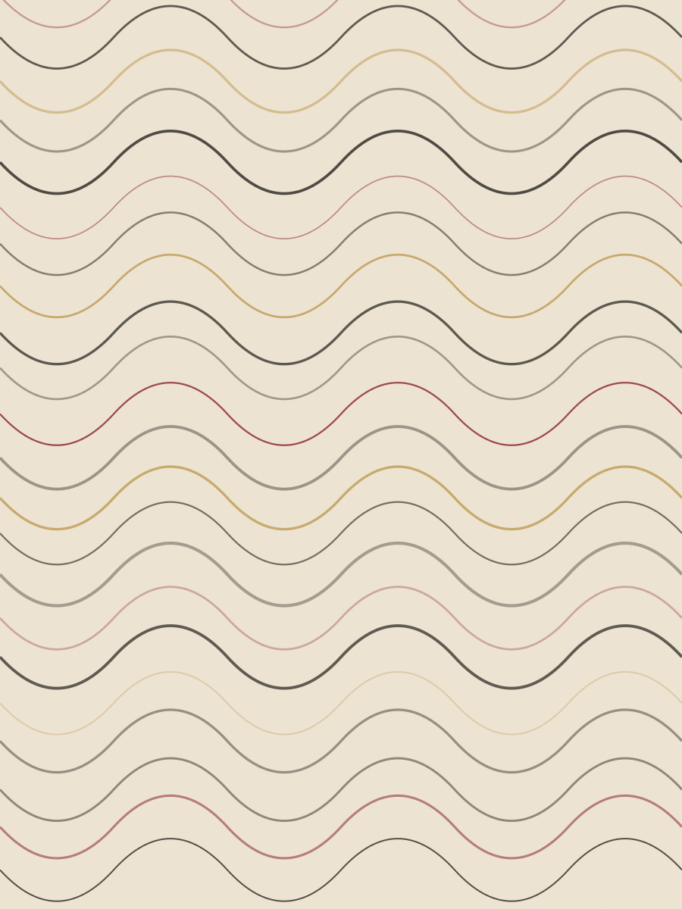
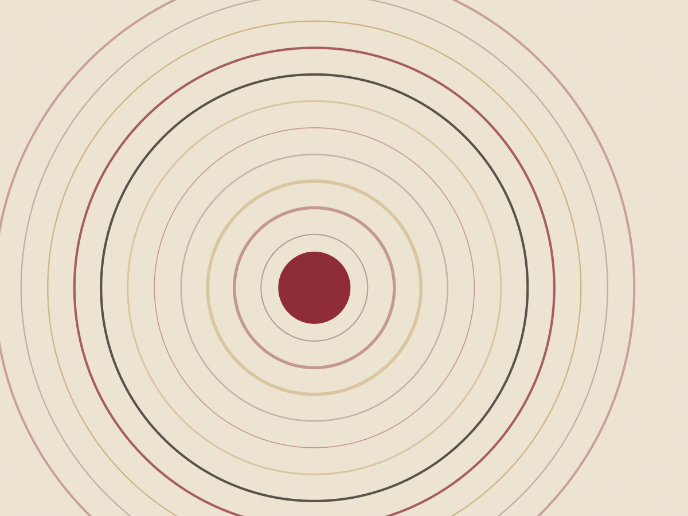
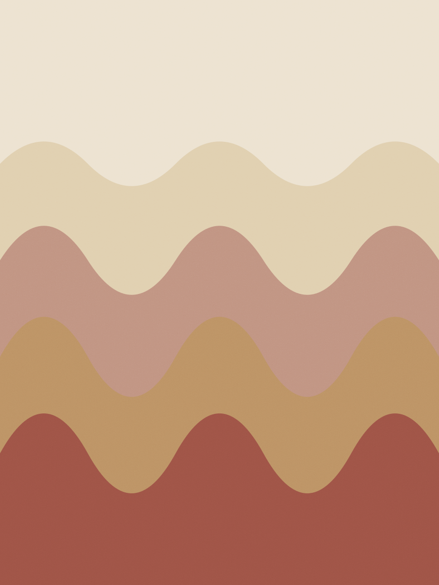
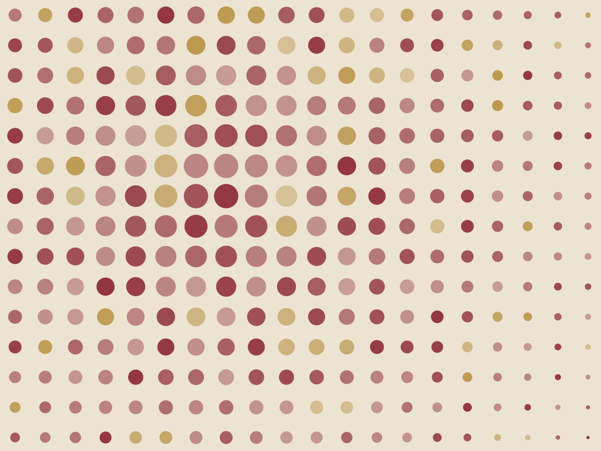

Coquetel
Em pé, quatro horas
R$ 119
por pessoa
- Dez salgados fritos e oito assados por pessoa
- Estação de frios e pão de fermentação lenta
- Refrigerante, suco e água por conta do salão
Ideal para 80 a 150 convidados
Santo Amaro · cozinha própria desde 2011
Seis opções de prato por evento, louça e equipe de salão incluídas, para 60 a 300 convidados. O cardápio fecha 21 dias antes da data, com prova de menu na cozinha.

Segunda a sexta, 11h30 às 15h
A mesma cozinha que atende os eventos abre para o almoço. Prato do dia com arroz, feijão, salada da estação, sobremesa do dia e café coado. Serve em 25 minutos.
Sem reserva até 4 pessoas · quarta é dia de feijoada
| Dia | Prato | Valor |
|---|---|---|
| Segunda | Bife à parmegiana, purê e arroz | R$ 52 |
| Terça | Frango assado com farofa de bacon | R$ 48 |
| Quarta | Feijoada completa com torresmo | R$ 58 |
| Quinta | Peixe do dia na chapa, legumes no vapor | R$ 54 |
| Sexta | Costela de porco 8 h, couve e laranja | R$ 56 |
| Sábado e domingo | Salão fechado para eventos | — |
Do telefone ao dia do evento
Cinco passos, cada um com prazo. Quem atende é a Cristina Ferraz, na casa desde 2014; no dia do evento ela é a responsável de salão.
Data, número de convidados, se o serviço é sentado ou em pé e se existe restrição alimentar na lista. A gente sai da conversa com uma faixa de preço, não com um "mandamos depois".
Às quintas, às 19h, no salão. Quatro pratos do cardápio, duas taças de vinho e o pão da casa. Custa R$ 180 para duas pessoas e o valor é abatido do contrato.
Você recebe em três dias úteis: os seis pratos com ficha técnica, a escala de garçons (um para cada 12 convidados), lista de louça e o horário de montagem.
Fecha o menu e o número de convidados. Uma troca de prato ainda é aceita até 14 dias antes, sem custo; depois disso, entra como extra.
Montagem começa seis horas antes: cozinha no local, mesas postas e teste de som. Às 18h a Cristina manda foto do salão pronto no seu WhatsApp.
Preço por pessoa
Mínimo de 60 convidados. Louça, toalha, garçom, transporte até 25 km de Santo Amaro e a limpeza do salão estão dentro do valor.
Coquetel
R$ 119
por pessoa
Ideal para 80 a 150 convidados
Jantar servido
R$ 168
por pessoa
O mais pedido em casamento e formatura
Estação
R$ 214
por pessoa
Para 150 a 300 convidados
Quatro montagens de 2024, com número de convidados e o que foi servido, para você ver como o salão se divide.




"Fechei o cardápio por telefone em vinte minutos e recebi a proposta no dia seguinte com a escala de garçons. No dia, a Cristina já estava no salão às 14h." Marta Rezende, casamento de 180 convidados em fevereiro de 2024
"Pedi feijoada fora de quarta para uma confraternização e a cozinha aceitou, com o mesmo preço do prato do dia por pessoa." Joel Amaral, confraternização de 64 pessoas em julho de 2024
Preencha a data e o número de convidados. A resposta sai com faixa de preço, não com "consulte-nos".
R$ 180 para duas pessoas, às quintas às 19h, com quatro pratos e duas taças. O valor é abatido do contrato quando o evento é confirmado; se você desistir, fica como consumação.
Mínimo de 60 e máximo de 300 no salão. Acima de 200, a montagem passa a usar as quatro ilhas e a equipe sobe para dois maîtres.
Trinta por cento na assinatura, quarenta por cento 15 dias antes e o restante até três dias úteis depois do evento. Cartão em até três vezes sem juros, PIX com 3% de desconto.
Sim. O cardápio tem duas opções sem glúten, duas sem lactose e uma vegetariana. Precisamos da lista de restrições até 10 dias antes, com o nome de cada convidado.
Pode, sem taxa de rolha do bolo. A casa guarda em câmara fria e serve na hora que você marcar. Bebida alcoólica de fora tem rolha de R$ 18 por garrafa.
Quatro pratos, duas taças e R$ 180 que voltam no contrato. Quinta às 19h, com vaga para até três casais por noite.
Seg a sex, 9h às 18h